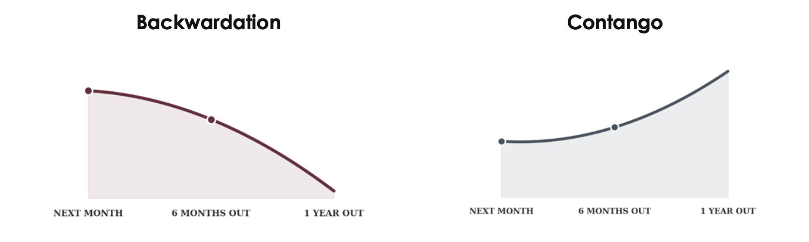

This issue's syllabus · Issue No. 12 · July 17, 2026
Commodities & Alternatives.
With oil driving every other market this week, this week's focus is commodities and understanding how oil gets priced.
With oil driving every other market this week, this week's focus is commodities and understanding how oil gets priced. A quick refresher before we begin. Brent is the international benchmark for oil, while WTI is the American benchmark. The two trade close together most of the time, but not always.
On any given day, it doesn't have one price. It has dozens. There's a price for oil delivered next month, a different price for oil delivered in six months, another for oil delivered in a year. When you line those prices up from soonest to furthest out, you get what's called the futures curve.
Most of the time, that curve slopes gently upward. Oil delivered later costs a little more than oil delivered soon, because storing a barrel between now and then costs money. That curve is known as contango: a market condition in which futures prices are higher in the more distant delivery months than in the nearest one, creating an upward-sloping forward curve.
This week's two-chokepoint threat is exactly the kind of event that can flip that slope upside down.
When oil for the soonest delivery costs more than oil delivered later, the curve is in backwardation, and it is the futures market's way of saying: I am worried about supply right now, not eventually. The technical definition: a market condition in which futures prices are lower in the more distant delivery months than in the nearest one.
Backwardation: What's Happening Right Now
Next month: $86
Six months out: $82
One year out: $79
Contango: The Normal Shape
Next month: $82
Six months out: $85
One year out: $88

Here's why backwardation happens. Buyers don't want to wait for a barrel that might get stuck behind a blockade. They want it immediately, and they're willing to pay a premium for that certainty while both of the routes Gulf oil relies on are under threat at the same time.
Picture it this way. As an example say oil for delivery next month trades around 86. If the market's fear is specifically about the near term, about Hormuz staying restricted and the Bab al-Mandab threat resolving one way or the other, oil for delivery six months out might trade closer to 82, and oil a year out closer to 79. When you line them up the curve slopes downward. Investors are paying a real premium, 7 dollars a barrel in this example, just to lock in oil they can actually get their hands on soon, because the near term routes are the ones actually in doubt.
The curve isn't the only place this shows up. Every barrel that gets rerouted adds extra shipping time, fuel and insurance that a barrel moving a month ago didn't have to pay. None of that shows up in the headline oil price, but the cost is still real. Oil itself costs more, but so does simply moving it. That extra cost shows up in freight and insurance markets well before it ever reaches the pump.
When you see oil “rise” in a headline, what actually moved is a forecast, not a fact. This week that forecast changed because the market started pricing two uncertain exits instead of one, and it did so within days rather than weeks.